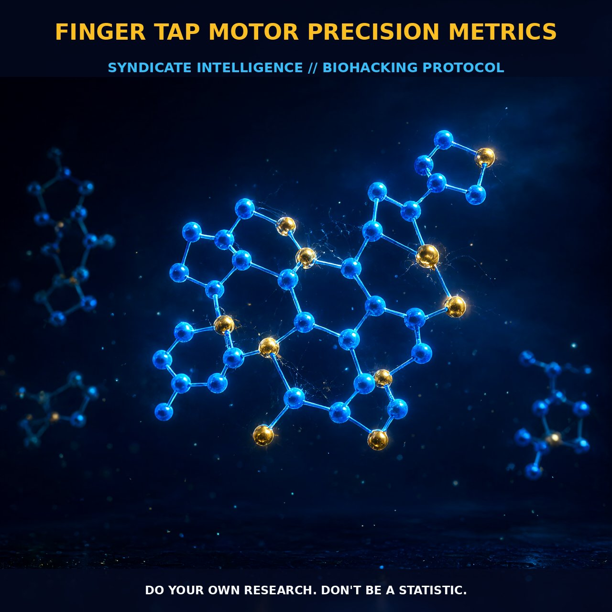

Finger Tap Motor Precision Metrics and Neuromuscular Integrity

1. The Mechanics of Neural Drive
Finger tap motor precision metrics quantify the intricate neural drive required to execute rapid, controlled isometric contractions within the upper extremities. This assessment relies on the orderly recruitment of human motor units, where neuromuscular junctions adapt their morphology based on fiber type to sustain tension without fatigue. The accuracy of this movement is defined by the ability to control movement intensity and direction with minimal variance, a parameter historically validated through the Jamar/Saehan hand dynamometer which has served as the gold standard since its development in 1954.
When measuring finger precision, we are not merely observing muscle bulk but evaluating the integrity of the myotendinous junction and the efficiency of electrical signal transmission from the central nervous system to the distal musculature. This deep dive into neuromuscular health provides a high-fidelity readout, capturing subtle declines in fine motor performance before they manifest as gross functional limitations in daily activities.
2. Physiological Load and Recruitment
The physiological load is modulated by the frequency and intensity settings applied during testing, which dictate whether the protocol targets endurance or peak strength. Using 100–400 microsecond biphasic rectangular pulses at a frequency of 50–100 Hz allows for maximal muscle tension recruitment while maintaining comfort levels that prevent early onset peripheral fatigue. This specific range ensures that the activation of motor units is progressive rather than abrupt, reflecting the true capacity of the neuromuscular system to handle linearly varying contractions.
3. Biological Leverage and Systemic Impact
Optimizing finger tap precision offers direct leverage over whole-body functional decline by serving as an early biomarker for central nervous system integrity. As the body ages, the correlation between hand grip strength and general fitness remains robust, with reference values established through large population studies like Health 2000 providing a baseline for normal growth and muscular preservation. In middle-aged individuals, maintaining high relative strength in the hands may protect against the gradual loss of proprioceptive acuity and neuromuscular coordination that often accompanies sedentary lifestyles.
The biological value extends beyond simple strength metrics into the realm of neural processing speed and visuospatial cognition. When motor performance is quantified using platforms that capture both automatic motor responses and cognitive load, it reveals how well the brain integrates sensory input with motor output. This integration is critical for maintaining independence and physical safety in older adults, as the ability to predict functional decline through grip strength testing allows for proactive interventions before significant muscle atrophy occurs.
4. Protocol Implementation
To implement precise finger tap metrics effectively, utilize a protocol that records the best result from three maximal isometric contractions with a 30-second interval between attempts. Position the subject seated with shoulders in adduction and elbows flexed to 90 degrees, as this geometry optimizes the length-tension relationship of the forearm muscles compared to the straight-arm position which yields higher absolute grip values.
For monitoring recovery processes, compare daily test results against previous baselines rather than static population averages, as individual variance can be significant depending on factors such as vascular access effects or recent training loads. This longitudinal tracking allows biohackers to identify neural fatigue states and adjust training intensity accordingly. Stacking this assessment with resistance training protocols that target specific fiber types can enhance the precision of motor output over time.
5. Prostar Life Hack
Optimize Measurement Geometry: Always seat with elbows flexed at 90 degrees to maximize the length-tension relationship of forearm muscles, ensuring your data reflects true neuromuscular potential rather than mechanical advantage variations.
Prostar Life Hack
Optimize Measurement Geometry: Always seat with elbows flexed at 90 degrees to maximize the length-tension relationship of forearm muscles, ensuring your data reflects true neuromuscular potential rather than mechanical advantage variations.
[ AUTHOR: LEAD TECHNICAL RESEARCHER ]